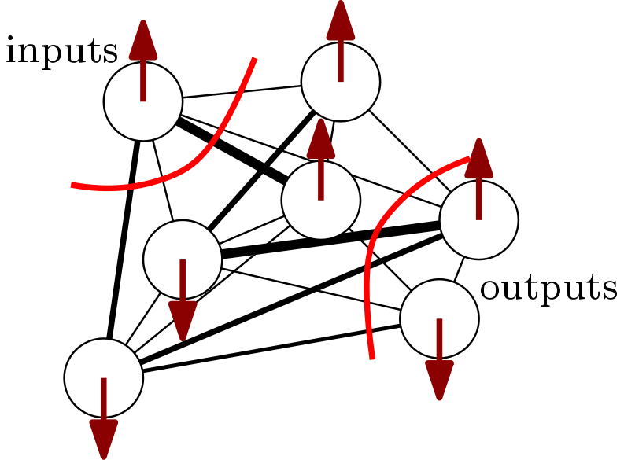

Physics and the Brain
Can we walk the fine line between gratuitous armchair philosophizing and crackpot bingo?

- Introduction
- Non-equilibrium dynamics: embracing chaos
- There is no avoiding the C-word
- Attention, world models, and hallucinations
- At least two realities
- The world as an external memory
- Attention as the dynamical response of non-equilibrium systems
- …
1. Introduction
In this post, I collect some open-ended thoughts on how a physicist with an inclination towards computationalism and statistical physics might look at neural information-processing systems and the idea of modeling human-like perception and intelligence.
We play crackpot bingo and touch on physics, consciousness, awareness, attention, world models, hallucinations, the nature of reality, active inference, and how a physicist might like models of attention to behave.
2. Non-equilibrium dynamics: embracing chaos
Ask physicists what they think about the brain as a physical system and they’ll likely tell you it’s a wet and messy non-equilibrium statistical-mechanical system. A vanishingly small minority will claim quantum effects are important. A large majority will claim these systems intrude on their honed and delicate sense of beauty as they’re too far removed from the world of spherical cows and sterile toy models. If the physicists in your sample happen to like computational metaphors, you might also hear something like “emergent collective computational abilities arising from many interacting degrees of freedom”.
But they might all agree that what survives beyond the small scale of a great many neuron excitations, inhibitions, and modulations are large-scale patterns. Different scales in our effective descriptions of physical reality tend to decouple: you don’t need quantum field theory to describe ocean currents. It’s what makes physics possible.
If the brain is a non-equilibrium statistical-mechanical system, then sensory and internal inputs are time-dependent “probes” injecting energy into the system. Energy that needs to be dissipated somehow, encouraging dynamical responses across spatiotemporal scales that continuously nudge and alter large-scale behavior. The brain self-organizes by embracing stochasticity and by never being quiet: there are always fluctuations to respond to and there is always energy to dissipate.
3. There is no avoiding the C-word
Most of the brain’s computations happen unconsciously, leading to ephemeral signals that wither away. This is the realm of fast perception and the current generation of deep neural networks. According to neuroscientists like Dehaene, only relatively long-lasting flashes of coherent activity appear in consciousness and constitute what we experience as “awareness”.
Even though consciousness feels like the space where thoughts, feelings, and subjective experiences appear, it could be interpreted as the mere presence of whatever large-scale, semi-stable pattern happens to be dominating at any one instant, perpetually influenced by the relentless unconscious nudging going on.
Large-scale patterns are useful because they can synchronize and remnants of their activity can be manipulated slowly on time scales of seconds, minutes, and days, up until biological death. We need slow, conscious processing of these remnants to come up with responses to probes that are hard to automate within the structure of our brains, which has been shaped by evolutionary baggage and contingincies.
4. Attention, world models, and hallucinations
Consciousness seems like an adaptive control mechanism for attention, affording us to fix on certain aspects of sensory perception and high-level mental representations while varying others, enabling us to reflect on the relation of our attention to these concepts and on attention itself. By processing information to better grasp our environment, we can exert control over our bodily appendages and the likelihood of passing on our genes.
Why do we have subjective experiences at all? Maybe it’s the result of evolutionary pressure in a social context: empathy, sympathy, perspective taking, and theory of mind all require to feel what other selves feel. That’s much easier to model if you are able to feel yourself, not only sharing the biological wetware but also “certain flavours of hallucinations”. Behavior resulting from large-scale patterns can then be recognized, encoded, and transferred as symbols to the minds of other beings, transcending space and time through language and culture.
The “feeling of being aware” is just another hallucination, your self-story just another part of the grand narrative constructed inside your brain’s world model. Even though there is nothing to “feel” outside our skulls, it is still helpful and beneficial for everyone to pretend that our subjective experiences align most of the time. Also, free will is a spectrum of illusions and discussing it hardly matters at all: just don’t be a dick.
5. At least two realities
Outside of individual subjective experiences, there does seem to exist a physical environment that is shared and which all propagating things exploit to interact with and use as a communication channel for sending and receiving information. Morally and pragmatically, there’s also a shared social reality and you would be rightly considered a solipsistic psychopath to deny its existence.
The crucial distinction to make here is between that “shared physical reality which we can never truly experience but only probe, observe, and approach indirectly” on the one hand and the “subjective conceptual experience built on our particular human sense data and shared concepts whose meaning has been agreed upon by convention over the course of millennia of cultural evolution” on the other hand.
We can use language and human concepts to make the statement that the sun has been a flaming ball of nuclear fusion in the middle of our solar system for billions of years. That it feels like warmth, light, and source of all life. These concepts did not arrive until we arrived, made “conscious observations”, and turned them into symbols that can be shared with the minds of others. Sensual, emotional, and scientific descriptions are all ways to grasp at the impenetrable and to doggedly hold on to order.
6. The world as an external memory
The dominant trend in deep generative modeling nowadays is to reproduce data in a pixel-perfect way, e.g. photo-realistic GANs. These are the incentives and metrics used to measure progress and evaluate state-of-the-art performance. Distilling the space of natural images into a pixel-perfect model is a solid strategy for developing a product or selling cloud computing credits, but it is arguably a lousy one to approach human-like intelligence.
Biological systems are embedded in a dynamic environment and have experienced early on that it’s a complete waste of energy to try to reconstruct accurate, low-level representations of incoming sense data when there is a world out there relentlessly bombarding you with evidence. In a very real sense, the environment is always right there, engulfing the system, and ready to be used as an external, probeable, and malleable memory for low-level details.
Learning in the brain is induced by perpetual interactions with the environment, nudging the dynamical response behavior of the system and modulating large-scale behavior over time. You cannot overfit if the ground beneath your feet is shifting all the time and you are forced to jump.
7. Attention as the dynamical response of non-equilibrium systems
If the goal is to build a system with self-organized emergent collective computational capabilities arising from many interacting degrees of freedom, we could look at systems where there a lot of metastable non-equilibrium states with rugged and interesting free energy landscapes and dynamic responses on a wide range of time scales.
Examples of such systems are spin glasses and disordered random systems, which show internal dynamics determined by random couplings between spin degrees of freedom. A random Ising model (or Boltzmann machine) defined for some spins in an external field looks something like

with an energy function
\begin{equation} E(t) = - \left( \sum_{i,j} J_{ij} S_{i} S_{j} + \sum_{i} \theta_{i}(t) S_{i} \right), \end{equation}
where the couplings $J_{ij}$ are drawn from some probability distribution and the external fields $\theta_{i}(t)$ specify a “preferred direction”. Modulating the external fields $\theta_{i}(t)$ pushes the model to try to align with an incoming “data stream” through relaxation. If we treat the couplings as free parameters (effectively making them sort of time-dependent as well), we expect structure and organization of the connection graph to emerge through learning. The goal for the system is to learn how to handle being driven by incoming data.
Learning can happen in at least two ways: (1) for a fixed network structure, we can dump energy in the system and have the system figure out a way to dissipate the energy through relaxation, and (2) the structure of a network itself can be adjusted via the couplings through free energy minimization. The system should never stop learning since stopping learning means death, decay, and rigor mortis.
A toy neural network agent in this framework would look something like this:

where we again have a graph of spins with two-body interactions but have designated a node as a probe point (e.g. sense inputs) and two other nodes as outputs (e.g. motor commands and muscle nerves). All nodes are part of the computation and can talk to each other but don’t have to.
The probe point receives local time-varying “magnetic fields” $\theta_{i}(t)$ at every timestep which inject energy (and useful information if its content is low-entropy enough) into the system. We picture this system to operate at a sufficiently high level, i.e. the sense inputs could be feature vectors coming from a convolutional neural network.
Without any explicit learning by tuning the couplings weights, relaxation of the system can lead to self-organization of the system’s response across time scales. For an interesting toy example of this kind of behavior, see this talk on Low rattling: a principle for understanding driven many-body self-organization.
Additionally minimizing free energy on top could (1) adjust the interaction weights to nudge the internal dynamics of the system, and (2) if the output nodes receive gradients, the output nodes could adapt to minimize free energy. This last concept is known as [active inference(https://en.wikipedia.org/wiki/Free_energy_principle) where an agent’s actions are adjusted to improve its world model. You perform saccadic eye movements because doing so will instantaneously improve your hallucination.
8. …
…
Acknowledgements
I would like to thank L.G.P. for inspiring discussions.
Matthias Bal
Machine learning engineer with a background in physics.